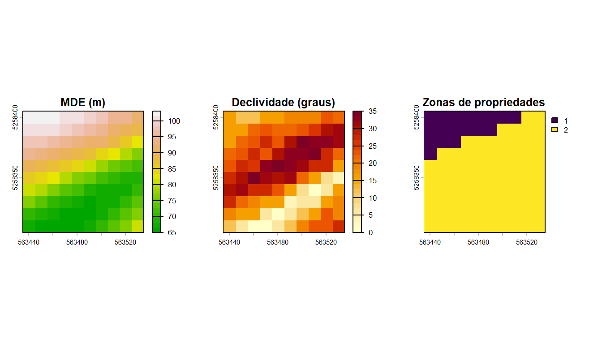
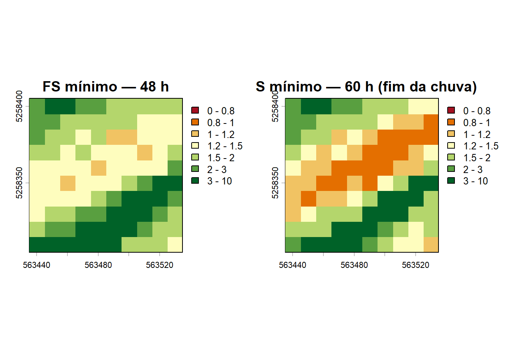
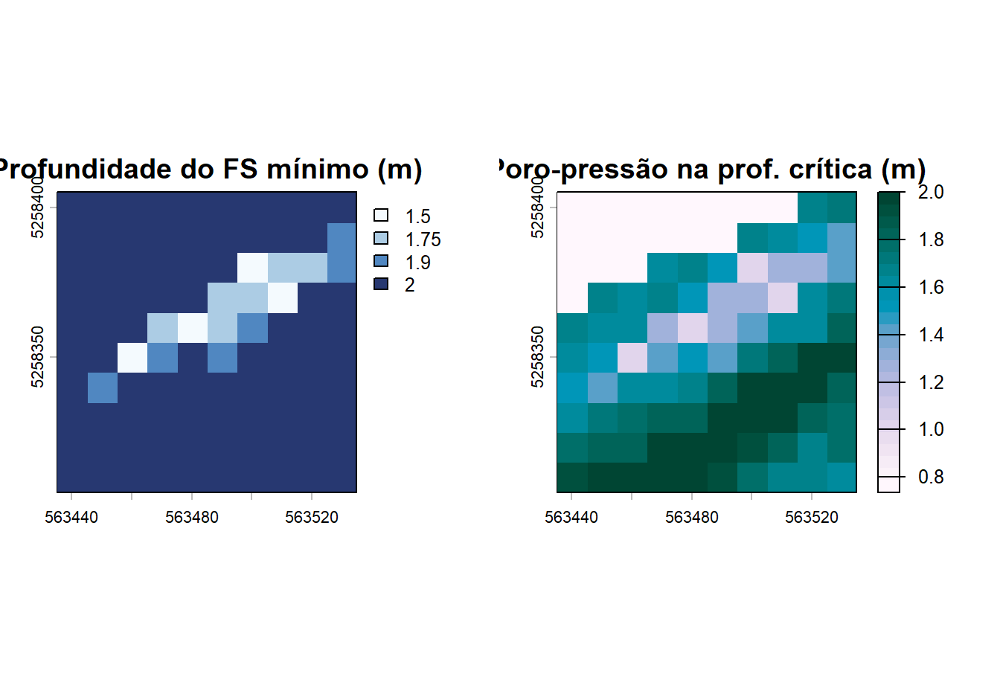

library(terra)5 Visualizando os resultados no R
Os resultados do TRIGRS são rasters ESRI ASCII — o pacote terra lê diretamente. Os chunks abaixo usam os arquivos deste repositório e rodam ao renderizar o livro (os mapas que você vê foram gerados agora, do resultado real).
5.1 Entrada: topografia e zonas
dem <- rast("exemplo_01/data/dem.asc")
slope <- rast("exemplo_01/data/slope.asc")
zones <- rast("exemplo_01/data/zones.asc")
par(mfrow = c(1, 3))
plot(dem, main = "MDE (m)", col = terrain.colors(25))
plot(slope, main = "Declividade (graus)", col = hcl.colors(25, "YlOrRd", rev = TRUE))
plot(as.factor(zones), main = "Zonas de propriedades")
5.2 Fator de segurança ao longo da chuva
fs48 <- rast("exemplo_01/Resultados/TRfs_min_tutorial_1.asc") # t = 48 h
fs60 <- rast("exemplo_01/Resultados/TRfs_min_tutorial_2.asc") # t = 60 h
# FS é truncado em 10 pelo TRIGRS (células estáveis); limitamos a escala p/ leitura
brks <- c(0, 0.8, 1.0, 1.2, 1.5, 2, 3, 10)
cols <- hcl.colors(length(brks) - 1, "RdYlGn")
par(mfrow = c(1, 2))
plot(fs48, main = "FS mínimo — 48 h", breaks = brks, col = cols)
plot(fs60, main = "FS mínimo — 60 h (fim da chuva)", breaks = brks, col = cols)
Células com FS < 1 (vermelho) são previstas como instáveis. Compare os dois tempos: nas primeiras 48 h (chuva fraca) praticamente tudo está estável; nas 12 h finais, com a tempestade, a infiltração eleva a poro-pressão e o FS despenca nas células mais íngremes.
5.3 Onde e a que profundidade romperia?
zfs <- rast("exemplo_01/Resultados/TRz_at_fs_min_tutorial_2.asc")
pfs <- rast("exemplo_01/Resultados/TRp_at_fs_min_tutorial_2.asc")
par(mfrow = c(1, 2))
plot(zfs, main = "Profundidade do FS mínimo (m)",
col = hcl.colors(25, "Blues", rev = TRUE))
plot(pfs, main = "Poro-pressão na prof. crítica (m)",
col = hcl.colors(25, "PuBuGn", rev = TRUE))
5.4 Quantificando: da instabilidade ao volume
inst <- fs60 < 1
n_inst <- global(inst, "sum", na.rm = TRUE)[1, 1]
area_celula <- prod(res(fs60)) # m² por célula
z_medio <- global(mask(zfs, inst, maskvalues = 0), "mean", na.rm = TRUE)[1, 1]
data.frame(
celulas_instaveis = n_inst,
area_instavel_m2 = n_inst * area_celula,
prof_media_ruptura_m = round(z_medio, 2),
volume_mobilizavel_m3 = round(n_inst * area_celula * z_medio, 1)
) celulas_instaveis area_instavel_m2 prof_media_ruptura_m volume_mobilizavel_m3
1 16 1600 1.74 2790Esse último número — área instável × profundidade de ruptura — é a ponte entre o TRIGRS e a estimativa de volume de fluxo de detritos. Na metodologia GIDES/JICA, o volume de sedimentos do plano é o menor entre o volume potencial gerável na bacia (Vdy1, com a parcela Vdy12 vinda de rupturas de encostas) e o volume transportável pela chuva de projeto (Vdy2, função da precipitação máxima diária Pd). A proposta da pesquisa é usar o TRIGRS para estimar fisicamente essa parcela — e, como a chuva entra explicitamente no modelo, avaliar cenários de mudança climática. Este será o tema das próximas partes do minicurso.